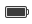

Upravljanje programov in nastavitev z menijsko vrstico
Menijska vrstica je temen trak na vrhu zaslona. Vsebuje gumbe za upravljanje oken, programske menije in menije stanja.
Gumbi za upravljanje z okni
Gumbi za upravljanje z okni so v zgornjem levem kotu oken. Kadar je okno razpeto, so gumbi v zgornjem levem kotu zaslona. Kliknite na gumbe za zaprtje, skrčitev, razpetje ali obnovitev oken.
Poglejte tudi
- Opravila oken — Obnovite, spremenite velikost, uredite in skrijte okna.
Meniji stanja
Ubuntu vsebuje več menijev stanja (včasih se imenujejo tudi kazalniki) na desni strani menijske vrstice. Meniji stanja so priročno mesto, kjer lahko preverite in spremenite stanje svojega računalnika in programov.
Seznam menijev stanja in njihovih zmožnosti
-
Meni sporočanja

Omogoča enostaven zagon in prejemanje dohodnih sporočil od programov sporočanja vključno z e-pošto, družabnimi omrežji in internetnim klepetom.
-
Meni baterije 
Preverite stanje polnjenja baterije prenosnika. Meni je skrit, če baterija ni bila zaznana.
-
Meni Bluetooth-a

Pošljite ali prejmite datoteke prek naprave Bluetooth. Meni je skrit, če naprava Bluetooth ni zaznana.
-
Meni omrežja
Poezava z žičnimi, brezžičnimi, mobilnimi in VPN omrežji.
-
Meni zvoka
Nastavite glasnost, nastavite zvočne nastavitve in nadzirajte predstavnostne predvajalnike kot je Rhythmbox.
-
Ura
Dostop do trenutnega datuma in časa. Tukaj so lahko prikazani tudi sestanki iz vašega koledarja Evolution.
-
Meni Sistem

Dostop do podrobnosti o računalniku, tega vodnika pomoči in sistemskih nastavitev. Preklop uporabnika, zaklep zaslona, odjava, prehod v stanje pripravljenost, ponoven zagon ali izklop računalnika.
Nekatere ikone v menijih kazalnika se spremenijo glede na stanje programa.
Menije kazalnika lahko v pult dodajo tudi drugi programi kot sta Tomboy ali Transmission.